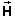
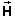

+
+  = (4.0, 8.0).
= (4.0, 8.0).
Adding components gives
  = + = (4.0, 8.0).
 = + = (4.0, 8.0).
The details of the calculation are shown underneath the diagram. The graphical construction shows the resultant in pink.
The diagram illustrates why adding the components is correct. It shows the x and y components of the three vectors in the same colors as the vectors.
Imagine the tips of the vectors to be projected onto the endpoints of the component bars. Then the component bars are added tip-to-tail, just like the vectors themselves.